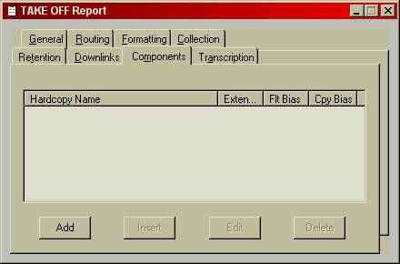
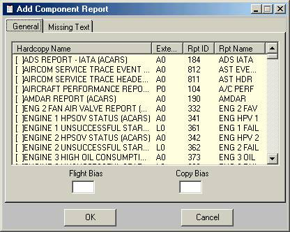
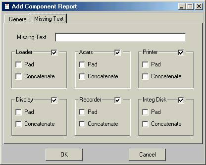

A merged report is a special case of an ACMS report where, in addition to the collection of parameter values, other reports are also collected and included with a report. This chapter describes the use of AGS IV in defining and changing merged reports.
The following are examples of cases where merged reports may be used:
· Different exceedances collected during the flight are combined into a single maintenance report at the end of the flight.
· A trend of all takeoff reports is collected into a single report.
In defining a merged report, in addition to its normal attributes (such as parameter collection, retention, etc. see the chapter on Reports), the “components” tab is used to call out other reports to be merged with the report (see Figure 11.1). These reports are called the components of the merged report and can be ed, ed, ed, or ed from the list.
In merging components with the parent report, hardcopy formats are always required for the components. Thus, in order to identify the component report, it is sufficient to call out the hardcopy formats of each component.
Once a particular report is selected for ition or ion, a new window (see Figure 11.2) is opened where in addition to specifying the component report (through its hardcopy name), the following information must also be provided:

For the component report included, this field specifies the flight leg from
which the report should be picked (see Figure 11.2). The leg number is
specified relative to the current flight, where 0 implies the current flight, 1
the previous flight, and 2 implies two flights ago, etc.
Figure 11.1: Report Specification Window
(Component Tab Shown).
This field (used together with the Flight Bias) specifies the copy of the component report to include in the Merged Report (see Figure 11.2). The selection is based on the copy number, where, 0 implies the most recent copy of the specified leg, 1 implies next oldest, etc.
This field displays the extension of the selected hardcopy format name. The recommended extensions to use are the following:
An - for ACARS, where n is between 0 and 9
Mn - for display, where n is between 0 and 9
Pn – for printer, where n is between 0 and 9. Numbers between 00 and 99 may also be used
Rn - for recorder, such as QAR or OQAR or internal recorder
Ln - Loader (ADL or PDL)
In – IDD
As a component report, with the specified flight bias and copy, may not always be available, provisions are made for a filler where the component report would have appeared. As an example, if a merged report is defined to display 5 exceedances from the last 3 flight legs, a total of 15 components, it would be very surprising to have all 15 exceedances available when the report is called out.

Figure 11.2: Report Component Specification Tabs (General tab).
In Figure 11.2, the Missing Report Text and the associated options specify what should replace a component in such cases. The options may be selected independently for each output device.
A check next to the name of the device indicates that a filler text is to be included. Otherwise it will be skipped. The text line field specifies the filler text, where needed.
If the Pad is checked for a device, then the filler will be padded with blank characters to the length of the report being replaced.

Figure 11.3: Report Component Specification Tabs (Missing Text tab).
Hardcopy reports may contain new line characters. Checking the Concatenate box causes such characters to be skipped. This allows for designing merged reports where small component reports (of possibly one or two values) are placed on the same line, rather that having them occupy one or more lines.